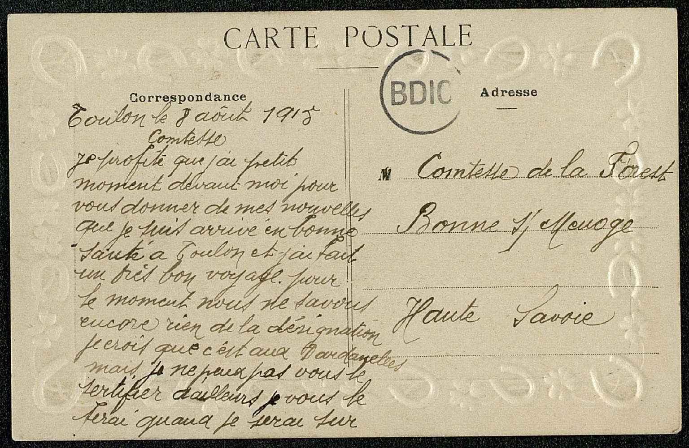
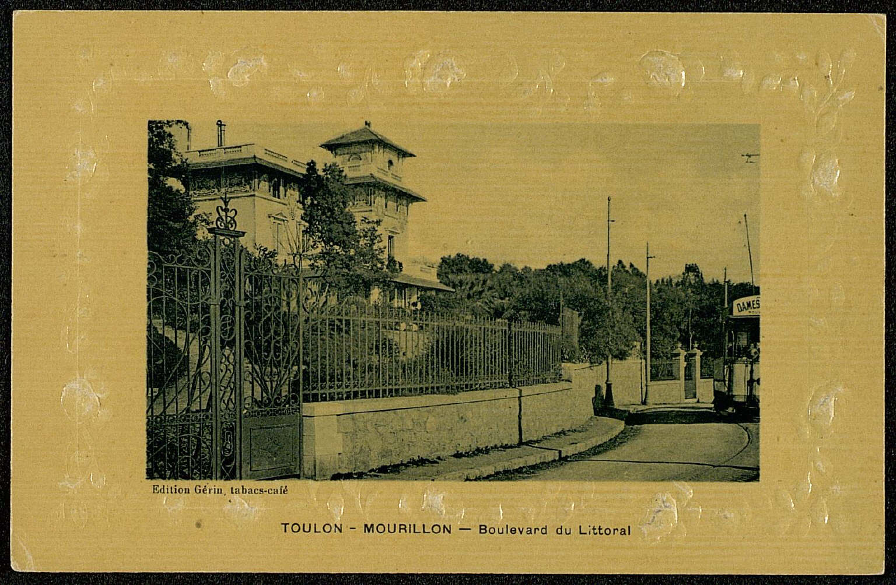
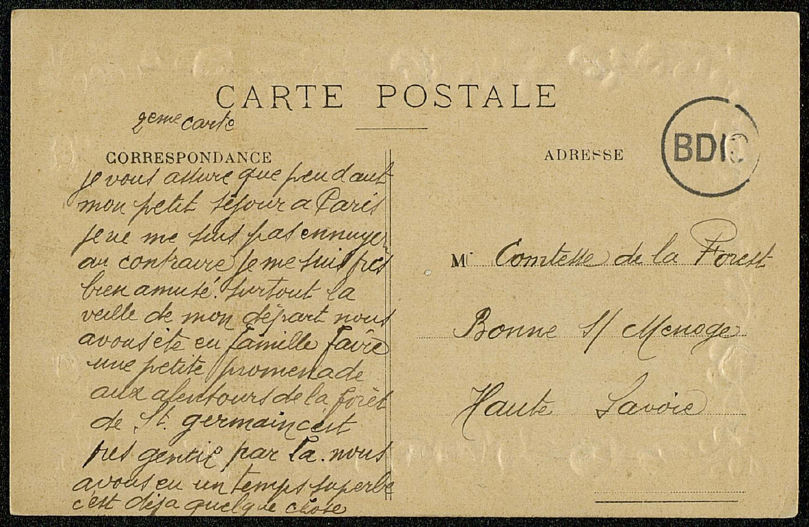
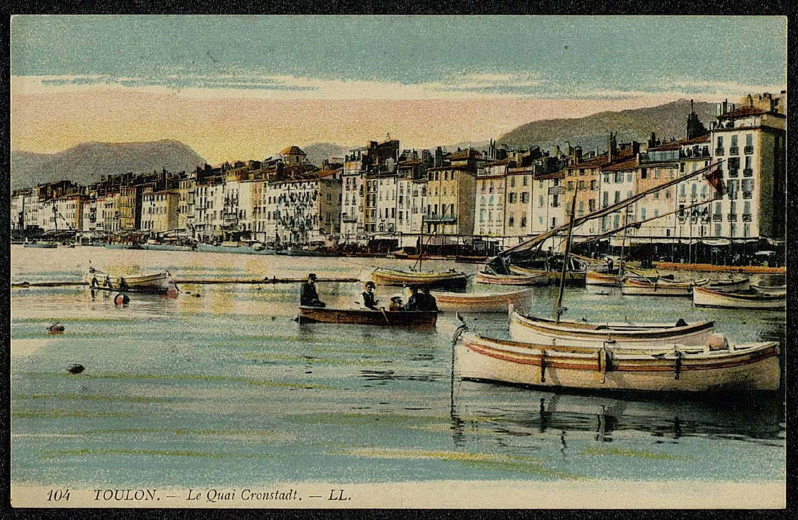
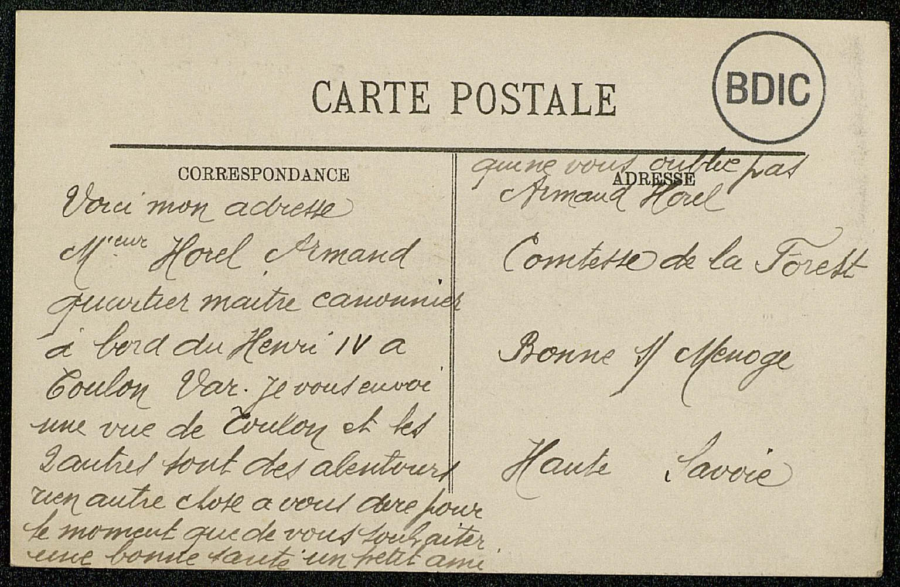
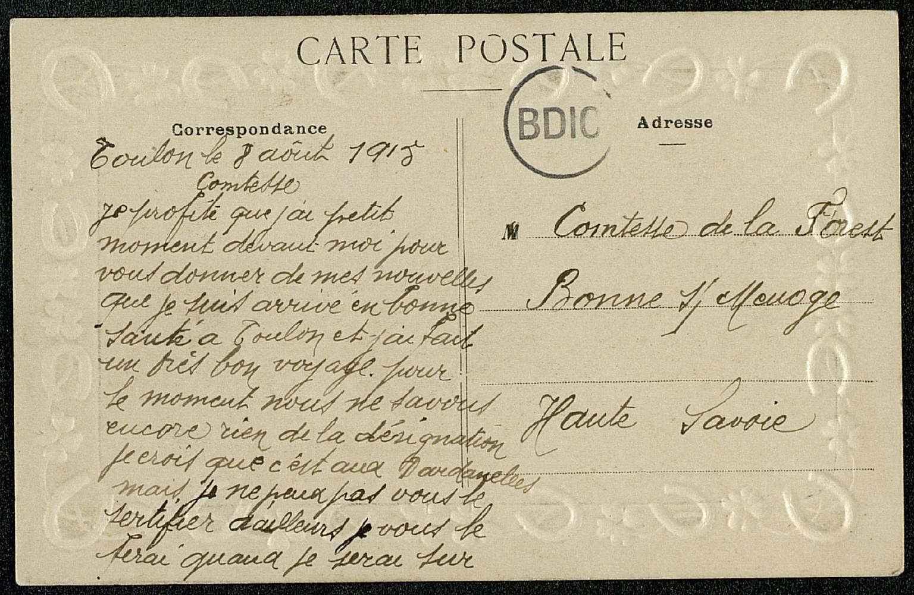
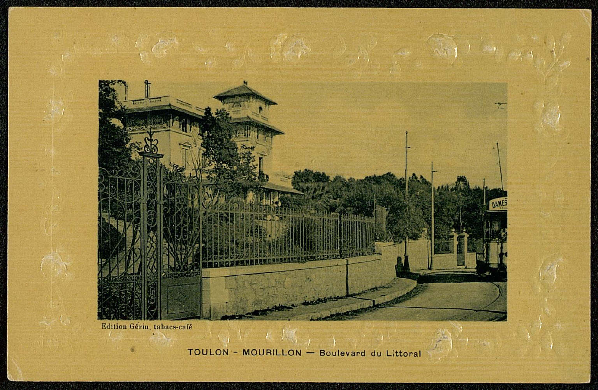
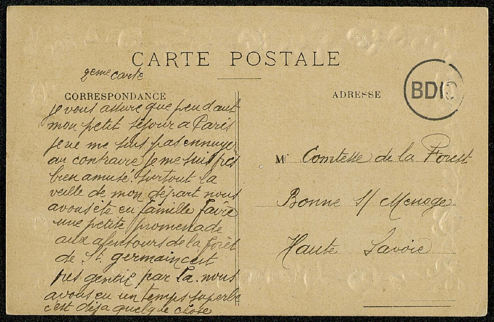
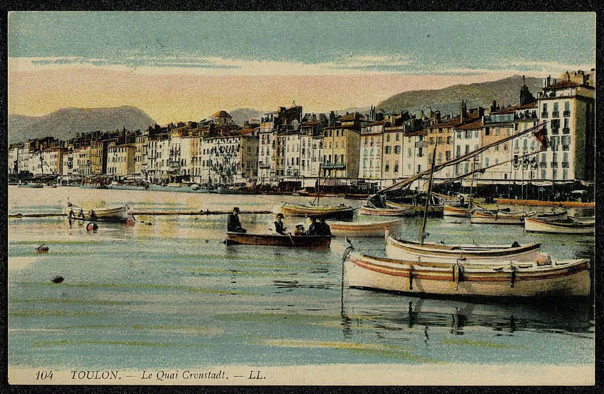
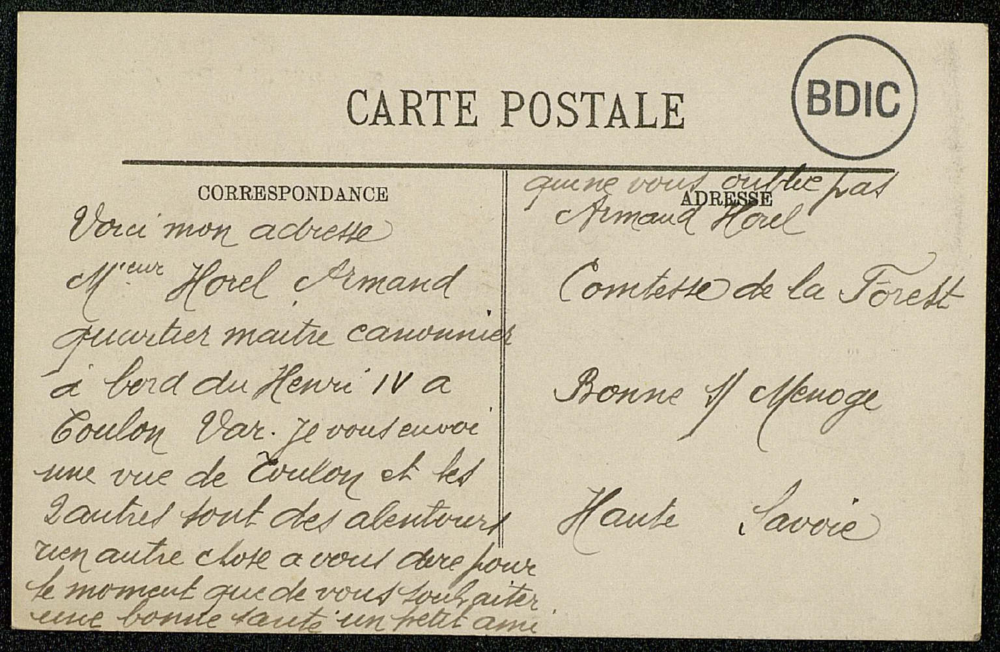

Toulon, le 8 août 1915
ComtesseComtesse L. de la Forest ,
Je profite que j'ai [un] petit moment devant moi pour vous donner de mes nouvelles ; que je suis arrivé en bonne santé à Toulon et j'ai fait un très bon voyage. pour le moment nous ne savons encore rien de la désignation, je crois que c'est aux Dardanelles mais je ne peux pas vous le certifier, d'ailleurs je vous le ferai quand je serai sûr.
(2) je vous assure que pendant mon petit séjour à Paris je ne me suis pas ennuyé. au contraire je me suis très bien amusé, surtout la veille de mon départ. nous avons été en famille faire une petite promenade aux alentours de la forêt de St-germain , c'est très gentil par là. nous avons eu un temps superbe c'est déjà quelque chose.
Voici mon adresse, Mieur Horel ArmandArmand Horel quartier maitre canonnier à bord du Henri IV à Toulon Var . Je vous envoie une vue de Toulon et les deux autres sont des alentours.
rien autre chose à vous dire pour le moment que de vous souhaiter une bonne santé, un petit ami qui ne vous oublie pas,
 








